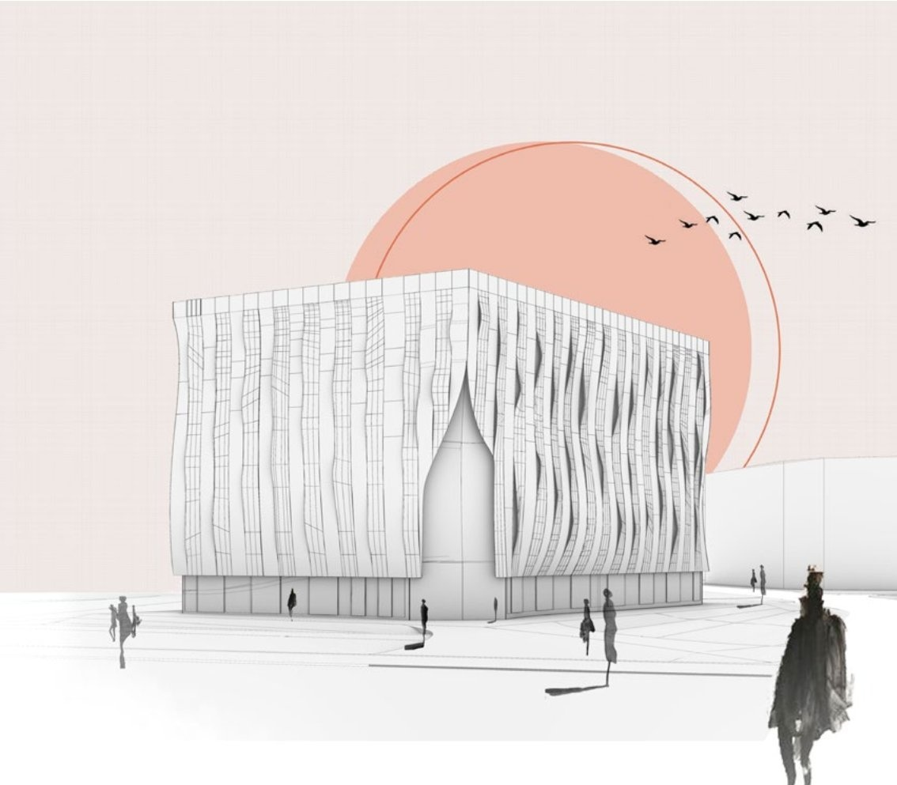
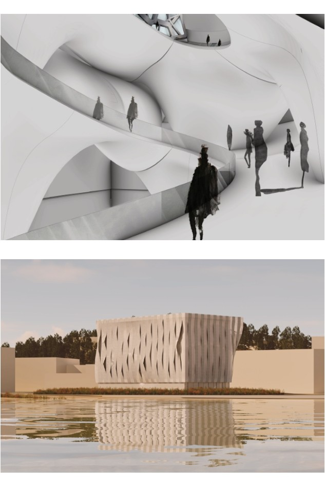
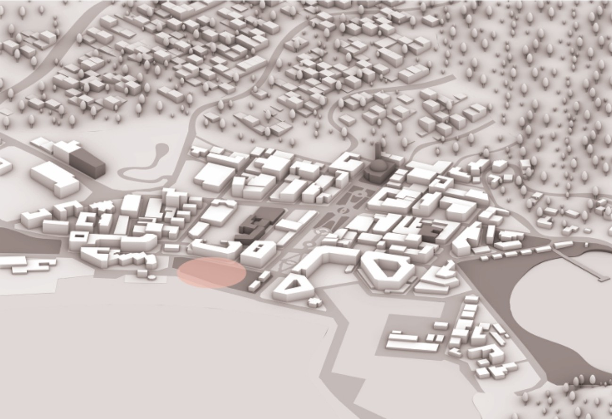
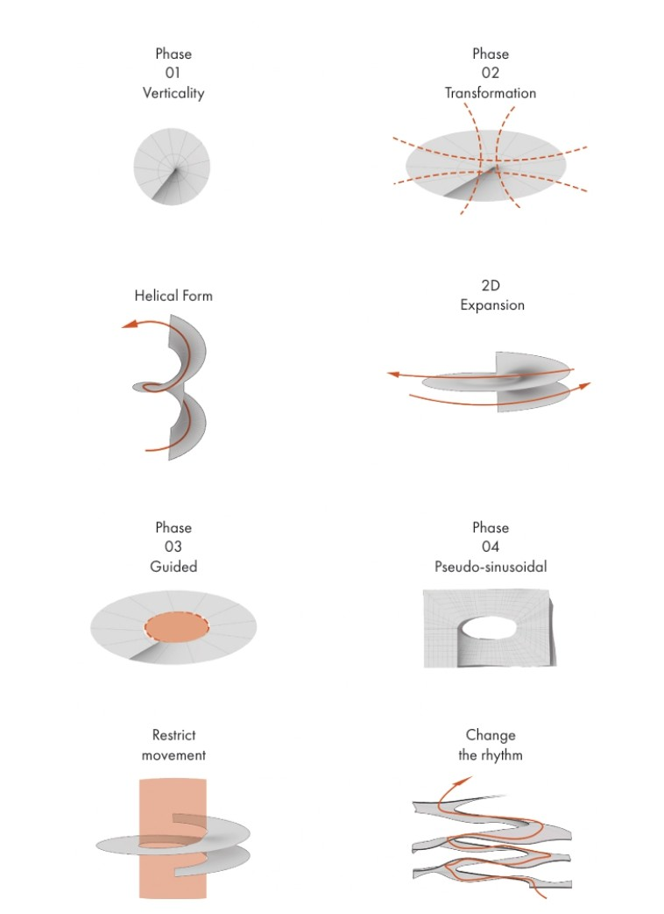
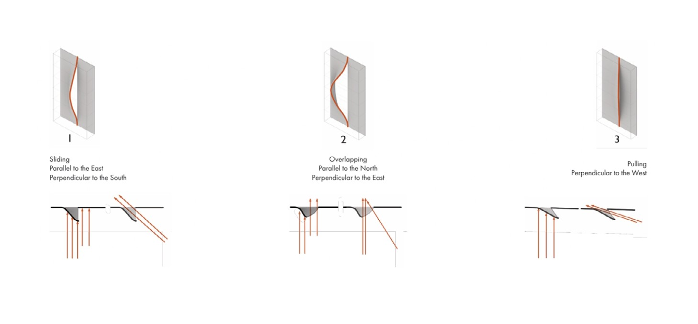

Academic · Cultural
Corallum
A coral research and exhibition centre on the northern Tunisian coast, designed as an academic project at ENAU to explore the relationship between scientific infrastructure and public space in a coastal landscape. The programme brings together a marine biology research laboratory, an exhibition space accessible to the public, and an outdoor platform for observation and education.
The project is organised around the relationship between water and land, with the building positioned at the edge of the sea on a rocky promontory. The research facilities are embedded into the topography, partially submerged to control temperature and light, while the public exhibition spaces rise above the rock to offer views of the sea. The structural system is reinforced concrete cast against rock formwork, with openings calibrated to frame specific views and filter the intense coastal light.
The project was developed through physical model-making and hand drawing alongside digital production, exploring the tectonic possibilities of a building built in and with the materials of its site.
Renders

Site

Formal Research, Volume

Formal Research, Facade
